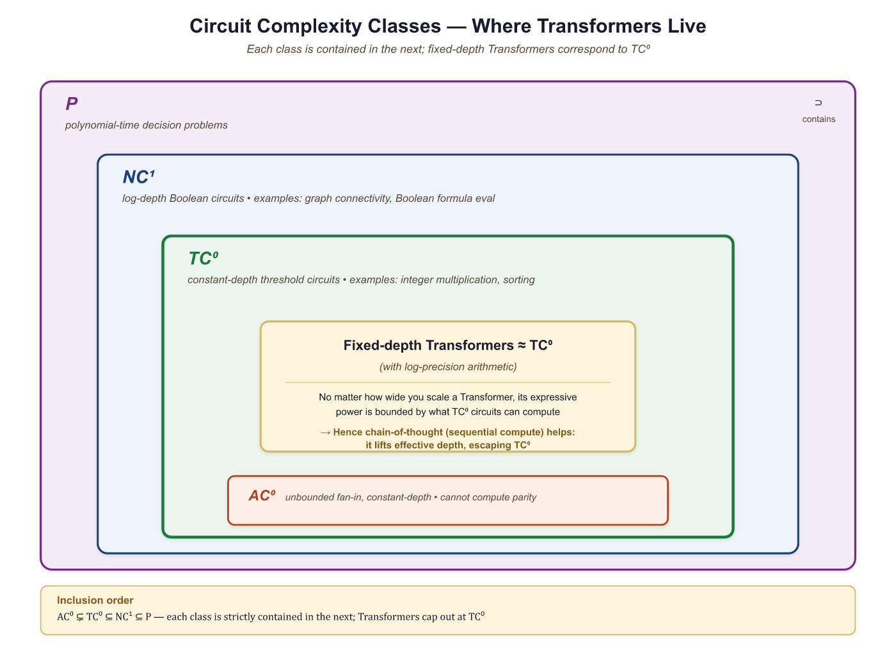

We proved that Transformers can theoretically compute anything. In practice, they mostly compute the next plausible word, which is still pretty good.
Norm, Theoretically Omnipotent AI Agent
Prerequisites
This research-focused section assumes comfort with the Transformer architecture from Section 3.1 and a basic understanding of computational complexity (P, NP, PSPACE). The deep learning fundamentals from Section 0.2 (universal approximation for MLPs) provide useful context. The practical implications of expressiveness limits connect to chain-of-thought prompting in prompt engineering techniques in Section 14.2.
Understanding what Transformers can and cannot compute in a single forward pass explains practical phenomena: why LLMs struggle with multi-step arithmetic, why chain-of-thought prompting works (it provides intermediate computation steps), and why some tasks require larger models while others do not scale with size. These theoretical insights, grounded in complexity theory, connect directly to prompt engineering strategies in Section 14.2 and reasoning capabilities explored in Section 9.1.
This section surveys theoretical results about the computational power of Transformers. The material is more abstract than the rest of this module and draws on complexity theory. It is included because these results have direct practical implications for understanding why certain tasks are easy or hard for LLMs, and why chain-of-thought prompting helps.

4.5.1 Universal Approximation
The classical universal approximation theorem for neural networks states that a single hidden layer with enough neurons can approximate any continuous function on a compact domain to arbitrary accuracy. A natural question: do Transformers have an analogous property for sequence-to-sequence functions?
4.5.1.1 Transformers as Universal Approximators of Sequence Functions
Yun et al. (2020) proved that Transformers are universal approximators of continuous sequence-to-sequence functions. Specifically, for any continuous function $f: R^{n \times d} \rightarrow R^{n \times d}$ and any $\epsilon > 0$, there exists a Transformer network that approximates $f$ uniformly to within $\epsilon$. The key requirements are:
- Sufficient depth (number of layers)
- Sufficient width (model dimension and feed-forward dimension)
- The attention mechanism must be able to implement "hard" attention (approaching argmax behavior)
This result tells us that the Transformer architecture is, in principle, capable of representing any continuous mapping from input sequences to output sequences. Of course, universal approximation says nothing about whether gradient-based training will find a good approximation, or how large the network needs to be. Still, it provides the theoretical foundation: the architecture itself is not the bottleneck.
If this section feels abstract, here is the practical punchline: the theoretical depth limits of Transformers explain why chain-of-thought prompting works. When you ask a model to "think step by step," you are giving it extra sequential computation (through generated tokens) that compensates for the fixed depth of its layers. The theory in this section predicts exactly this behavior.
The proof of universal approximation critically relies on the feed-forward network, not just attention. Attention alone (without the FFN) is a linear operator over the value vectors; it can only compute weighted averages. The FFN provides the nonlinear transformations needed to approximate arbitrary functions. This is one theoretical justification for why the FFN matters so much in practice, as we discussed in Section 3.1.
4.5.2 Transformers as Computational Models
Beyond approximation, we can ask: what computational problems can Transformers solve? This requires connecting Transformers to formal computational complexity classes.
4.5.2.1 Fixed-Depth Transformers and TC0
A foundational result by Merrill and Sabharwal (2023) shows that a fixed-depth Transformer with log-precision arithmetic (O(log n) bits per number, where n is the input length) can be simulated by TC0 circuits, and vice versa. $TC^{0}$ is the complexity class of problems solvable by constant-depth, polynomial-size threshold circuits.
This has concrete implications for what fixed-depth Transformers cannot do:
- Cannot solve problems that require counting precisely (e.g., determining if the number of 1s in a binary string is exactly equal to the number of 0s), because $TC^{0}$ cannot solve the "majority with equality" problem.
- Cannot solve inherently sequential problems like evaluating nested compositions of functions (e.g., computing $f(f(f(...f(x)...)))$ with n nested applications of an arbitrary function f).
- Cannot simulate a general-purpose Turing machine for an arbitrary number of steps, because $TC^{0}$ is strictly contained in P.

4.5.2.2 The Precision Assumption Matters
The $TC^{0}$ characterization assumes log-precision arithmetic: each number in the Transformer uses O(log n) bits. With unbounded precision (arbitrary-precision real numbers), a Transformer can simulate any Turing machine in polynomial time, making it trivially universal. This highlights that the precision of computation is a critical variable in the theoretical analysis.
In practice, Transformers use 16-bit or 32-bit floating point, which is somewhere between log-precision and unbounded precision. The practical implications of the theoretical results hold approximately: tasks requiring deep sequential reasoning are indeed harder for Transformers, even if the formal impossibility results rely on specific precision assumptions.
4.5.3 Limitations: What Transformers Struggle With
The theoretical results predict specific failure modes, and these predictions are borne out empirically. Here are the key categories of problems that fixed-depth Transformers find difficult:
4.5.3.1 Inherently Sequential Computation
Problems that require a long chain of dependent computation steps are hard for Transformers because each layer can only perform a constant amount of sequential work. The total sequential depth is the number of layers, typically 32 to 96. Tasks requiring more sequential steps than this (relative to the model's precision) become problematic.
Example: multi-step arithmetic. Computing ((3 + 7) * 2 - 4) / 3 requires evaluating
operations in order. Each operation depends on the result of the previous one. A fixed-depth
Transformer must either learn to parallelize this computation (difficult) or represent the
intermediate results within a single forward pass (limited by depth).
4.5.3.2 Counting and Tracking State
Exact counting (e.g., "does this string have exactly 47 opening parentheses?") is difficult because log-precision attention scores cannot represent arbitrary integers precisely for long sequences. The model can approximate counting for small numbers but degrades as counts grow large.
4.5.3.3 Graph Reasoning
Problems like graph connectivity, shortest paths, and cycle detection require iterative algorithms that propagate information through the graph structure. A constant-depth Transformer can only propagate information a constant number of "hops" per layer, limiting its ability to reason about graph structures that require many hops.
These theoretical limitations apply to fixed-depth, fixed-precision Transformers. Real LLMs are very large (96+ layers), have moderately high precision (BF16/FP32), and are trained on massive datasets that may help them learn approximate solutions. The theory tells us which tasks will be hard and where to expect failure modes, not that the model will always fail. Large models often "mostly work" on these tasks but exhibit characteristic errors at the boundary of their capability.
4.5.4 Chain-of-Thought Extends Computational Power
Asking a Transformer to "think step by step" literally gives it more computation, because each generated token is another forward pass through billions of parameters. It is as if you could become smarter simply by talking to yourself longer, which, come to think of it, is not a terrible description of how humans work either.
This is perhaps the most practically important theoretical result. Chain-of-thought (CoT) reasoning, where the model generates intermediate reasoning steps before producing a final answer, fundamentally changes the computational model. We explore how to elicit CoT through prompt engineering techniques in Section 14.2, and how it shapes reasoning-focused models in Section 8.3. Instead of computing the answer in a single forward pass (constant depth), the model now performs computation proportional to the number of generated tokens.
4.5.4.1 CoT as Additional Computation Steps
When a Transformer generates T tokens of chain-of-thought reasoning, each token's generation involves a full forward pass through the model. The information from each token is fed back as input for the next, creating an effective sequential computation depth of $T \times N$ (tokens times layers). This is a fundamentally different computation than a single forward pass.
Feng et al. (2023) and others have shown that a fixed-size Transformer with chain-of-thought (unbounded generation length) can simulate any Turing machine. The generated tokens serve as the Turing machine's tape, and each forward pass computes one step of the Turing machine's transition function. This means CoT is not just a prompting trick; it provably extends the computational class of the model from $TC^{0}$ to Turing-complete.
4.5.4.2 Why CoT Helps on Hard Problems
Consider the task of multiplying two large numbers, say 347 × 892. A single forward pass through a Transformer must compute this in constant depth, which the theory predicts is very difficult (large integer arithmetic is not in $TC^{0}$). But with CoT, the model can:
- Break the multiplication into partial products (347 × 2, 347 × 90, 347 × 800)
- Compute each partial product (one or two tokens of intermediate computation each)
- Add the partial products (again, with intermediate steps)
- Produce the final answer
Each individual step is simple enough for a single forward pass. The chain of thought provides the sequential depth that a single pass cannot.
4.5.4.3 Implications for LLM Design and Prompting
This theoretical framework has direct practical consequences:
- Prompting for reasoning: Asking the model to "think step by step" is not just about better prompts; it gives the model additional computational depth for problems that require it.
- Token budget matters: For hard reasoning tasks, limiting the model's output length directly limits its computational power. Longer chains of thought enable harder computations.
- Scratchpad training: Training models to use intermediate computation (reasoning tokens, scratchpads) is a way to extend their effective depth. This is the principle behind approaches like "thinking" tokens in some recent models.
- Verifiable vs. generative reasoning: The model's ability to generate a correct proof (step by step) may exceed its ability to directly produce the answer, because generation provides the sequential depth that direct answers require doing in a single pass.
4.5.5 Open Questions
Several fundamental questions remain open in this area:
- Practical expressiveness gaps: The theory identifies tasks that are provably hard for fixed-depth Transformers, but we lack a precise understanding of which real-world tasks are affected. Are there important NLP tasks that current models fail at specifically because of computational depth limitations?
- Depth vs. width tradeoffs: How does the tradeoff between model depth and model width affect the class of computable functions in practice? A very wide but shallow model versus a narrow but deep model may have qualitatively different capabilities.
- Implicit chain-of-thought: Can Transformers learn to perform internal "chain-of-thought" reasoning within their hidden layers, effectively using the residual stream as a scratchpad? Some evidence suggests this happens (intermediate layers performing identifiable reasoning steps), but the theory is not well developed.
- SSMs and expressiveness: How does the computational class of SSMs (Mamba, RWKV) compare to Transformers? SSMs have a recurrent structure that provides sequential depth, but they compress information into a fixed-size state. The expressiveness tradeoffs are not yet fully understood.
Understanding $TC^{0}$ limitations directly informs prompt design. A developer building an LLM-based data validation tool needed the model to count how many rows in a CSV snippet violated a constraint. Asking "How many rows have values above 100?" consistently produced wrong answers for tables with more than about 20 rows, because exact counting is outside $TC^{0}$. Switching the prompt to chain-of-thought ("Check each row one at a time, marking YES or NO, then count the YES marks") solved the problem, because the sequential token generation provided the iterative depth that a single forward pass could not. This pattern generalizes: whenever a task requires iteration or exact counting, structuring the prompt to externalize the loop as generated tokens aligns the problem with the model's computational strengths.
The computational limitations of fixed-depth Transformers echo a much older result in mathematical logic. Godel's incompleteness theorems (1931) showed that any sufficiently powerful formal system contains true statements it cannot prove. Similarly, a fixed-depth Transformer contains functions it can approximate in theory but cannot compute in practice within its forward pass. Chain-of-thought reasoning is analogous to extending the proof system: by generating intermediate tokens, the model gains access to computations that were previously unreachable, just as adding axioms to a formal system can make previously unprovable statements provable. This raises a philosophical question: if an LLM's reasoning ability depends on the length of its chain of thought, is its "intelligence" a property of the model itself, or of the model plus its output medium? The answer connects to the extended mind thesis discussed in Section 26.6, where tool use expands an agent's cognitive boundary.
Key Takeaways
- Transformers are universal approximators of continuous sequence-to-sequence functions, given sufficient depth and width.
- Fixed-depth Transformers with log-precision arithmetic correspond to the complexity class $TC^{0}$, which cannot solve inherently sequential problems or problems requiring deep iterative computation.
- Chain-of-thought reasoning fundamentally extends the computational power of Transformers by providing additional sequential depth through token generation.
- With unbounded CoT length, Transformers become Turing-complete; this is not just a prompting technique but a provable increase in computational class.
- These theoretical results predict practical failure modes: tasks requiring long sequential computation, exact counting, and graph reasoning are harder for single-pass Transformers.
Show Answer
Show Answer
Show Answer
Show Answer
Show Answer
Exercises
For each task, predict whether a fixed-depth 32-layer Transformer will succeed without chain-of-thought, succeed with CoT, or fail with both. Justify each in one sentence using $TC^{0}$ reasoning. (a) Detecting whether a 1000-character string contains the letter "x". (b) Determining whether two parenthesis strings of length 1000 are correctly balanced. (c) Computing the SHA-256 hash of a 100-byte input. (d) Reversing a 50-token list.
Answer Sketch
(a) Succeeds without CoT. This is a parallel-friendly task: each position checks independently whether the character is "x" and one global OR returns the answer. Squarely in $TC^{0}$. (b) Fails without CoT, succeeds with CoT. Balanced parentheses requires counting depth at each position, and exact arbitrary counting is outside $TC^{0}$ for long strings. With CoT (process each token sequentially, updating a depth counter as a generated number), each step is simple. (c) Fails with both. SHA-256 requires a fixed but very long sequence of cryptographic transformations on the same fixed-size input; CoT would help with the iteration depth, but the model has no way to learn the exact bit-level transformations without seeing trillions of (input, hash) pairs which is unrealistic. (d) Succeeds without CoT for short lists. Reversal is a permutation that fixed-depth attention can implement (each position attends to its mirror); for 50 tokens this is straightforward, no CoT needed.
A 32-layer Transformer generates a chain-of-thought of 500 tokens before producing its answer. (a) What is the effective sequential computational depth, as a multiple of the no-CoT case? (b) If each forward pass takes 50ms, how long does the CoT version take? (c) Argue why this depth-via-tokens approach is more flexible than building a deeper model (e.g., 16000 layers).
Answer Sketch
(a) Effective depth = 500 × 32 = 16,000 sequential operations vs. 32 without CoT, a 500x increase. (b) 500 forward passes × 50ms = 25 seconds; CoT is 500x slower in wall-clock terms but enables computations that the static model cannot do at all. (c) Three arguments: (i) Compute is amortized per task: CoT only spends extra compute on hard problems; easy problems get short chains. A 16000-layer model would spend the same compute on every input. (ii) Token-level computation is interpretable: humans can read the chain-of-thought and verify each step. Internal 16000-layer activations are opaque. (iii) Memory scales differently: storing 16000 layers' parameters requires ~100x more GPU memory; CoT reuses the same 32 layers repeatedly. The same architecture serves easy and hard tasks at different compute budgets, which is impossible with fixed deep models. This is the principle behind OpenAI's o1/o3 family and DeepSeek-R1.
The chapter notes that exact counting is outside $TC^{0}$. Design a controlled experiment that demonstrates this empirically. (a) Specify the task and the input distribution. (b) Predict the relationship between accuracy and the count magnitude. (c) Sketch how the failure mode would change if you allowed the model to generate intermediate tokens.
Answer Sketch
(a) Task: given a binary string of length n, output the exact number of 1s. Input distribution: n in {10, 100, 1000, 10000}, count drawn uniformly from [0, n]. Use a fixed pretrained model with prompt "Count the 1s: 10110...". (b) Prediction: accuracy is near 100% for small counts (0-20) regardless of n. Accuracy degrades smoothly past count ~25-30 because the model's "count head" attention pattern (a soft sum) cannot precisely distinguish 47 vs 48 when both produce similar attention magnitudes. Accuracy converges to roughly 1/k (random over k plausible answers) for counts beyond 100. The decline pattern (smooth degradation rather than cliff) reflects log-precision arithmetic limits. (c) With CoT: prompt "Go through the string one character at a time, increment a counter for each 1. Start: counter=0. Position 1: 1, counter=1. Position 2: 0, counter=1. ..." Each step is a simple update, well within $TC^{0}$. Accuracy should rise to ~100% across all magnitudes, bounded only by the model's ability to maintain a running integer (which it represents in tokens, not in attention scores).
The universal approximation theorem says a Transformer can approximate any continuous sequence-to-sequence function. (a) Why is this theorem nearly useless for predicting which functions a real Transformer will learn from data? (b) Name three properties of a target function that affect learnability beyond approximation capacity. (c) Give a concrete example of a function that a Transformer can represent but cannot learn in practice.
Answer Sketch
(a) Universal approximation is a statement about existence of weights, not about whether SGD/Adam can find them. The theorem says "somewhere in weight space, there exists a setting that solves your problem," but the loss landscape may be such that no local-search optimizer can reach it from any reasonable initialization. (b) Three properties: (i) Smoothness/Lipschitz constant: highly non-smooth functions (e.g., pseudorandom functions) have nearly flat loss landscapes that gradient descent cannot navigate. (ii) Sample complexity: even if the function is learnable in the limit, the dataset size needed may be astronomical (the parity function on n bits needs 2^n examples in the worst case). (iii) Inductive bias mismatch: Transformers have an inductive bias toward attention-friendly patterns (sparse, local, hierarchical); functions that don't match this bias (e.g., uniformly distributed pointer-chase functions) are exponentially harder to learn than to represent. (c) Example: any cryptographic hash function (SHA-256). A 32-layer Transformer can represent SHA-256 by hardcoding the round function in weights, but no SGD/Adam training has ever learned even SHA-1 from (input, hash) pairs; the loss landscape is essentially flat because changing any output bit requires coordinated changes across many parameters.
You compare two models with equal total parameters: (A) 6 layers, d_model = 1024; (B) 24 layers, d_model = 512. (Both have ~75M params if FFN is 4d.) (a) For permutation-equivariant tasks (sorting), which would you expect to perform better and why? (b) For tasks requiring sequential reasoning (multi-hop QA), which would you expect to perform better and why? (c) The theoretical class for both is still $TC^{0}$ without CoT, so why does depth matter empirically?
Answer Sketch
(a) Sorting and similar "set permutation" tasks are essentially parallel: every position needs to know its rank, which requires comparing to all others. Wider models (more attention dimensions per head, more FFN capacity per layer) can represent richer comparisons. Model A (wider, shallower) typically wins on sorting and on classification tasks that are largely "look at everything in one shot." (b) Multi-hop QA requires propagating information through several "reasoning steps" within the forward pass. Each Transformer layer can perform roughly one hop of attention-based reasoning. With 24 layers, model B has 4x more opportunities to chain inferences. Empirically, deeper-narrower models win on reasoning benchmarks (BIG-Bench Hard, MMLU multi-step questions). (c) $TC^{0}$ is a coarse class. Within $TC^{0}$, depth determines the constant number of sequential hops the model can perform, and more hops mean strictly more functions can be expressed (formally, the AC^0 to TC^0 hierarchy is finely stratified by depth). Beyond a certain task complexity, model A simply cannot represent the function even though both are nominally in the same coarse class.
The "open questions" section mentions that Transformers may perform internal chain-of-thought via the residual stream, using intermediate layers as a scratchpad. (a) What architectural feature makes this possible? (b) If this hypothesis is true, what experimental evidence would you expect to find? (c) Why might explicit CoT (generated tokens) still be more powerful than implicit CoT, even if both exist?
Answer Sketch
(a) The residual stream is the additive sum of every sub-layer's output, accessible to every later layer. This creates a "blackboard" architecture where information can flow forward through depth, and each layer can read prior layers' contributions, modify them, and write back. Geva et al. and Anthropic's interpretability team have shown specific layers performing identifiable subroutines (entity resolution at layer X, then composition at layer Y), consistent with this view. (b) Evidence we would expect: (i) Probing accuracy: linear probes on intermediate layer activations should predict the "intermediate answer" of a multi-step problem before the final output is computed. (ii) Causal mediation: ablating specific layers (or attention heads in specific layers) should disable specific sub-skills predictably. (iii) Activation patching: replacing intermediate activations from one prompt into another should swap the intermediate "thought" in interpretable ways. All three forms of evidence exist for some tasks (see Anthropic's "Toy Models of Superposition" line of work). (c) Explicit CoT is still more powerful because: (i) it has unbounded effective depth (N × T), while implicit CoT is fixed at N layers; (ii) it can be inspected and verified; (iii) it can carry through external tool calls and grounded computations; (iv) it can iteratively self-correct based on its own outputs, which implicit CoT cannot do without re-running the forward pass.
You now understand the Transformer architecture: how it processes tokens, what each component contributes, and what theoretical limits it faces. In Chapter 05, you will learn what to do with the logits that come out of the final layer. How do we turn a probability distribution over 50,000 tokens into actual generated text? The answer is more subtle than you might expect.
Formal reasoning capacity of LLMs is a rapidly evolving theoretical topic. Merrill and Sabharwal (2024) showed that bounded-precision Transformers can only solve problems in TC^0 without chain-of-thought, but with CoT they can simulate any polynomial-time computation. This has practical implications: reasoning models like OpenAI's o1/o3 and DeepSeek-R1 use extended thinking traces precisely to break through these expressiveness limits. Meanwhile, Feng et al. (2023) proved that log-precision Transformers can solve problems outside TC^0 when given enough layers, suggesting that depth trades off with the need for explicit reasoning chains. See prompt engineering techniques in Section 14.2 for the practical implications of these results in prompt design.
Hands-On Lab: Build a Transformer Block from Scratch, Then Use PyTorch
Objective
Implement a complete Transformer encoder block (self-attention, layer norm, feedforward, residual connections) from scratch using NumPy, then replicate it in under 20 lines with PyTorch's nn.TransformerEncoderLayer. This lab solidifies every architectural component covered in this chapter.
Skills Practiced
- Combining multi-head attention with feedforward layers and residual connections
- Implementing layer normalization from scratch
- Building positional encodings (sinusoidal)
- Comparing a manual implementation with PyTorch's built-in Transformer layers
Setup
Install the required packages for this lab.
pip install numpy matplotlib torchSteps
Step 1: Implement layer normalization and feedforward network
These are the two components that surround the attention mechanism in every Transformer block. Layer norm stabilizes training; the feedforward network adds non-linear capacity.
import numpy as np
def layer_norm(x, eps=1e-5):
"""Layer normalization: normalize each token's features to zero mean, unit variance."""
mean = np.mean(x, axis=-1, keepdims=True)
var = np.var(x, axis=-1, keepdims=True)
return (x - mean) / np.sqrt(var + eps)
def feedforward(x, W1, b1, W2, b2):
"""Position-wise feedforward: Linear -> ReLU -> Linear."""
hidden = np.maximum(0, x @ W1 + b1) # ReLU activation
return hidden @ W2 + b2
# Test layer norm
x = np.random.randn(4, 16)
normed = layer_norm(x)
print(f"Before norm: mean={x[0].mean():.3f}, std={x[0].std():.3f}")
print(f"After norm: mean={normed[0].mean():.6f}, std={normed[0].std():.3f}")Step 2: Assemble a complete Transformer encoder block
Combine attention, layer norm, feedforward, and residual connections into a single block. This follows the Pre-LN convention (norm before attention) used by GPT-2 and most modern models.
import numpy as np
def softmax(x, axis=-1):
e_x = np.exp(x - np.max(x, axis=axis, keepdims=True))
return e_x / np.sum(e_x, axis=axis, keepdims=True)
def self_attention(X, W_q, W_k, W_v, W_o, n_heads):
"""Multi-head self-attention (simplified, no mask)."""
seq_len, d_model = X.shape
d_head = d_model // n_heads
Q, K, V = X @ W_q, X @ W_k, X @ W_v
outputs = []
for h in range(n_heads):
q_h = Q[:, h*d_head:(h+1)*d_head]
k_h = K[:, h*d_head:(h+1)*d_head]
v_h = V[:, h*d_head:(h+1)*d_head]
scores = q_h @ k_h.T / np.sqrt(d_head)
weights = softmax(scores)
outputs.append(weights @ v_h)
return np.concatenate(outputs, axis=-1) @ W_o
def transformer_block(X, params):
"""One Transformer encoder block with Pre-LN residual connections."""
# Sub-layer 1: Self-attention
normed = layer_norm(X)
attn_out = self_attention(normed, params["W_q"], params["W_k"],
params["W_v"], params["W_o"], params["n_heads"])
X = X + attn_out # Residual connection
# Sub-layer 2: Feedforward
normed = layer_norm(X)
ff_out = feedforward(normed, params["W1"], params["b1"],
params["W2"], params["b2"])
X = X + ff_out # Residual connection
return X
# Initialize parameters
d_model, d_ff, n_heads = 32, 64, 4
np.random.seed(42)
scale = 0.02
params = {
"n_heads": n_heads,
"W_q": np.random.randn(d_model, d_model) * scale,
"W_k": np.random.randn(d_model, d_model) * scale,
"W_v": np.random.randn(d_model, d_model) * scale,
"W_o": np.random.randn(d_model, d_model) * scale,
"W1": np.random.randn(d_model, d_ff) * scale,
"b1": np.zeros(d_ff),
"W2": np.random.randn(d_ff, d_model) * scale,
"b2": np.zeros(d_model),
}
X = np.random.randn(6, d_model) # 6 tokens
output = transformer_block(X, params)
print(f"Input shape: {X.shape}")
print(f"Output shape: {output.shape}")
print(f"Residual preserved: input and output have same shape ✓")
Step 3: Add sinusoidal positional encodings
Without positional information, the Transformer treats input as a bag of tokens. Sinusoidal encodings let the model distinguish token positions without any learned parameters.
import numpy as np
import matplotlib.pyplot as plt
def sinusoidal_encoding(seq_len, d_model):
"""Generate sinusoidal positional encodings."""
pe = np.zeros((seq_len, d_model))
position = np.arange(seq_len)[:, np.newaxis]
div_term = np.exp(np.arange(0, d_model, 2) * -(np.log(10000.0) / d_model))
pe[:, 0::2] = np.sin(position * div_term)
pe[:, 1::2] = np.cos(position * div_term)
return pe
pe = sinusoidal_encoding(50, d_model)
fig, ax = plt.subplots(figsize=(10, 4))
im = ax.imshow(pe.T, cmap="RdBu", aspect="auto", interpolation="nearest")
ax.set_xlabel("Position")
ax.set_ylabel("Dimension")
ax.set_title("Sinusoidal Positional Encodings")
plt.colorbar(im, ax=ax)
plt.tight_layout()
plt.savefig("positional_encodings.png", dpi=150)
plt.show()
# Apply to input
X_with_pos = X + pe[:6] # Add positional info to 6 tokens
output_with_pos = transformer_block(X_with_pos, params)
print("Position-aware Transformer block output computed.")Step 4: Replicate with PyTorch in 15 lines
Now see how PyTorch wraps all of this complexity. The library version handles batching, GPU acceleration, and gradient computation automatically.
import torch
import torch.nn as nn
# The same Transformer block in PyTorch
d_model, d_ff, n_heads, seq_len = 32, 64, 4, 6
encoder_layer = nn.TransformerEncoderLayer(
d_model=d_model,
nhead=n_heads,
dim_feedforward=d_ff,
batch_first=True,
norm_first=True, # Pre-LN, matching our from-scratch version
)
x = torch.randn(2, seq_len, d_model) # batch of 2
output = encoder_layer(x)
print(f"PyTorch input shape: {x.shape}")
print(f"PyTorch output shape: {output.shape}")
print(f"\nParameter count: {sum(p.numel() for p in encoder_layer.parameters()):,}")
print(f"Components: self_attn, linear1, linear2, norm1, norm2")
print("\nFrom scratch: ~80 lines. PyTorch: ~10 lines. Same architecture.")Extensions
- Stack 4 Transformer blocks (both from scratch and with PyTorch's nn.TransformerEncoder) and compare the output shapes and parameter counts.
- Replace sinusoidal encodings with learned positional embeddings (nn.Embedding) and compare behavior on a simple sequence classification task.
- Implement RoPE (Rotary Position Embeddings) as used in Llama and compare it with sinusoidal encodings on long sequences.
What's Next?
In the next chapter, Chapter 05: Decoding Strategies and Text Generation, we shift from architecture to generation, exploring the decoding strategies that turn model outputs into coherent text.